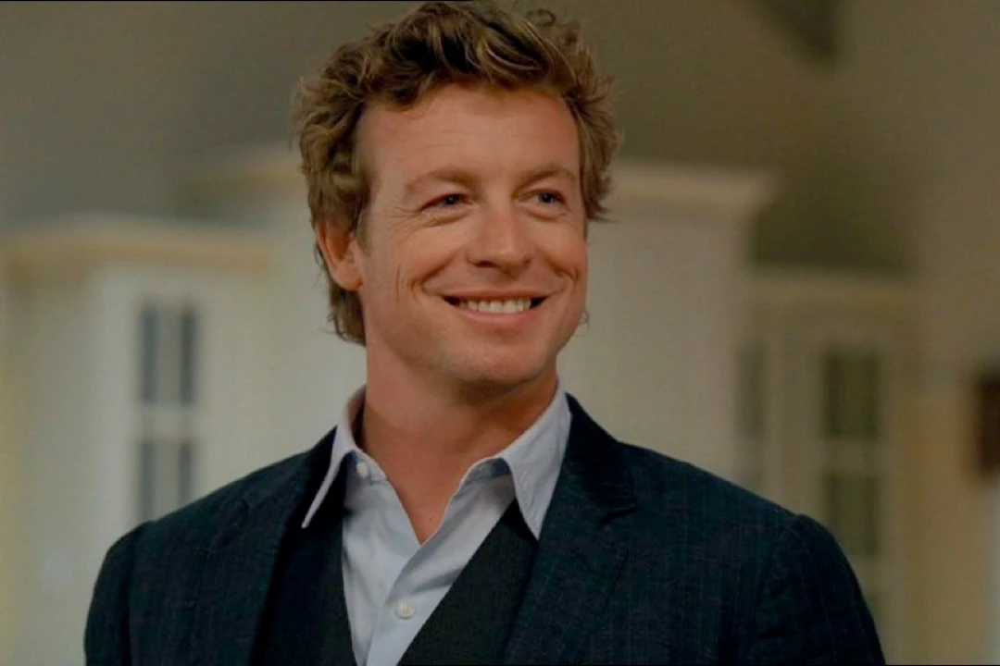
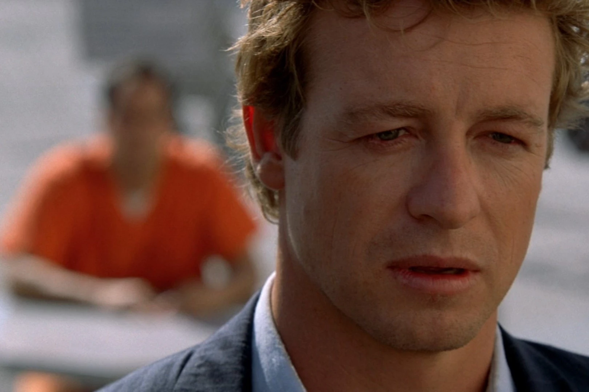
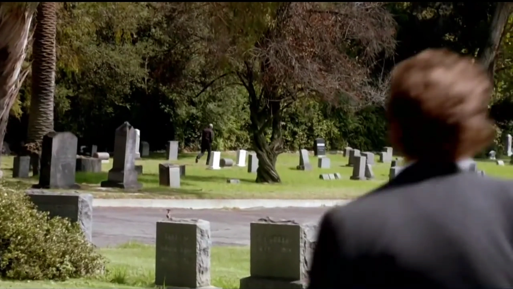
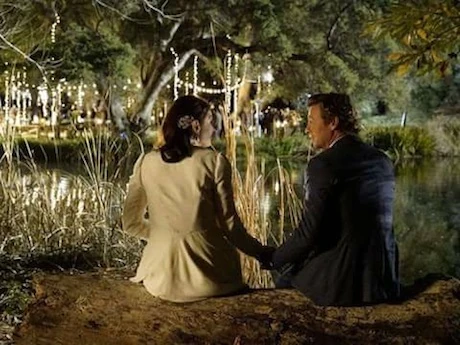

Psicología · Escuela psicológica
Patrick
Jane
El falso médium que resolvía crímenes mirando lo que nadie miraba.
Felipe Mas · 24 de agosto de 2026
Expediente
La serie

Método · sin poderes
Cómo lee a la gente
Evidencia
Lee detalles que
los demás pasan por alto
Gestos
Una mano que tiembla, una mirada que se va antes de contestar.
Contradicciones
Lo que la persona dice contra lo que su cuerpo ya dijo.
Hábitos
Lo que alguien repite sin darse cuenta de que lo repite.


El motor de la serie
Red John
Mató a su esposa y a su hija como venganza, porque Jane se burló de él públicamente, en TV, diciendo que podía identificarlo.
Firmaba cada crimen con esta cara sonriente pintada en la pared.
Consecuencia
Esa
culpa
lo vuelve
Manipulador
Usa a la gente como usaba al público cuando fingía.
Impulsivo
No espera la orden ni la prueba: si lo ve, va.
Rompe las reglas
Justicia por mano propia, aunque arruine el caso.

Segunda parte · la escuela
Conductismo
Jane no interpreta el inconsciente ni hace introspección tipo Freud. Se basa pura y exclusivamente en la conducta observable.
Qué mira
Gestos · tono de voz · postura · sudor · pupilas · tics
El mecanismo
Estímulo, respuesta, predicción
Encuentra patrones de refuerzo, condicionamiento y aprendizaje previo, y con eso anticipa qué va a hacer la persona. Un observador conductista extremo: no busca entender la mente profunda, busca predecir.

Leer al otro por lo que hace, no por lo que diceConductismo
Por lo que
hace
Le tiembla la mano al contestar, entonces miente. Conducta observable: se mide, se registra, se predice.
Psicoanálisis
Por lo que
siente
Por qué miente, qué reprime detrás de esa mentira. Inconsciente e interpretación: lo que Jane no hace.
Jane no adivina.
Observa, registra y predice.
Felipe Mas
24 · 08 · 2026